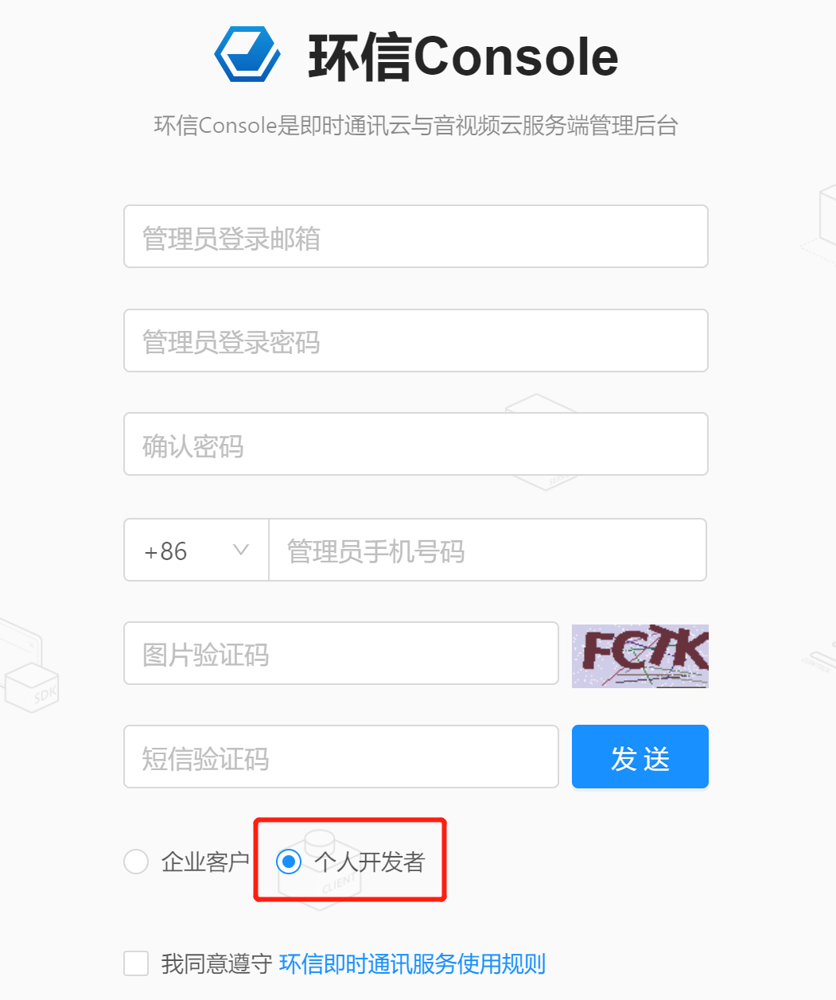

第3章 - 即时通讯和接口加密
学习目标：
- 了解即时通讯业务场景和需求；
- 了解短连接和长连接
- 了解websocket协议
- 使用环信im云实现十次方即时通讯功能
- 了解接口加密业务需求
- 掌握常用加密算法和密钥格式
- 实现十次方的接口加密微服务
1 即时通讯的业务场景和需求
即时通信（Instant Messaging，简称IM）是一个允许两人或多人使用网络实时的传递文字消息、文件、语音与视频交流。 即时通讯技术应用于需要实时收发消息的业务场景。
现在各种各样的即时通讯软件也层出不穷：
客服系统
直播互动


抖音 全民直播 斗鱼
社交APP


微信 陌陌
智能硬件，物联网

摩拜单车 小黄车
2 短连接和长连接
即时通讯使用的是长连接，这里我们介绍一下短连接和长连接。
2.1 短连接
客户端和服务器每进行一次通讯，就建立一次连接，通讯结束就中断连接。

HTTP是一个简单的请求-响应协议，它通常运行在TCP之上。HTTP/1.0使用的TCP默认是短连接。
2.2 长连接
是指在建立连接后可以连续多次发送数据，直到双方断开连接。

HTTP从1.1版本起，底层的TCP使用的长连接。
使用长连接的HTTP协议，会在响应头加入代码：Connection:keep-alive
2.3 短连接和长连接的区别
2.3.1 通讯流程
短连接：创建连接 -> 传输数据 -> 关闭连接 长连接：创建连接 -> 传输数据 -> 保持连接 -> 传输数据 -> …… -> 关闭连接
2.3.2 适用场景
短连接：并发量大，数据交互不频繁情况
长连接：数据交互频繁，点对点的通讯
2.3.3 通讯方式
| 方式 | 说明 |
|---|---|
| 短连接 | 我跟你发信息，必须等到你回复我或者等了一会等不下去了，就结束通讯了 |
| 长连接 | 我跟你发信息，一直保持通讯，在保持通讯这个时段，我去做其他事情的当中你回复我了，我能立刻你回复了我什么，然后可以回应或者不回应，继续做事 |
3 websocket协议
3.1 何为websocket协议
WebSocket 是 HTML5 开始提供的一种在单个 TCP 连接上进行全双工通讯的协议。
- 何谓全双工：全双工（Full Duplex）是通讯传输的一个术语。双方在通信时允许数据在两个方向上同时传输，它在能力上相当于两个单工通信方式的结合。全双工指可以同时进行信号的双向传输。指A→B的同时B→A，就像是双向车道。
- 单工就就像是汽车的单行道，是在只允许甲方向乙方传送信息，而乙方不能向甲方传送 。
参考资料：https://baike.baidu.com/item/%E5%85%A8%E5%8F%8C%E5%B7%A5/310007?fr=aladdin
在 WebSocket中，浏览器和服务器只需要完成一次握手，就可以创建持久性的连接，并进行双向数据传输。
在推送功能的实现技术上，相比使用Ajax 定时轮询的方式(setInterval)，WebSocket 更节省服务器资源和带宽。
服务器向客户端发送数据的功能是websocket协议的典型使用场景

3.2 websocket常用事件方法
以下 API 用于创建 WebSocket 对象。
var Socket = new WebSocket(url, [protocol] );
WebSocket 事件
以下是 WebSocket 对象的相关事件。假定我们使用了以上代码创建了 Socket 对象：
| 事件 | 事件处理程序 | 描述 |
|---|---|---|
| open | Socket.onopen | 连接建立时触发 |
| message | Socket.onmessage | 客户端接收服务端数据时触发 |
| error | Socket.onerror | 通信发生错误时触发 |
| close | Socket.onclose | 连接关闭时触发 |
WebSocket 方法
| 方法 | 描述 |
|---|---|
| Socket.send() | 使用连接发送数据 |
| Socket.close() | 关闭连接 |
使用资料中的案例Spring-websocket演示WebSocket
4 十次方的im功能
4.1 系统设计
4.1.1 技术选型
- 环信im云
- 前端框架 vue
4.1.2 架构设计
前端页面使用十次方用户微服务认证用户身份，使用环信im云进行即时消息通信。

4.2 环境和工具
- nodejs
- npm
- 前端框架 vue
- 开发工具 vscode
4.3 环信im云介绍
环信im云是即时通讯云 PaaS 平台，开发者可以通过简单的SDK和REST API对接。
- 支持安卓，iOS，Web等客户端SDK对接
- 提供单聊，群聊，聊天室等即时通讯功能
- 支持富媒体消息，实时音视频和各种自定义的扩展消息
4.3.1 注册账号
网址：https://console.easemob.com/user/register

4.3.2 创建应用
- 登录环信im云，按照下图进行操作


输入appname后，appkey会自动生成
进入刚才创建的应用，获取appkey，orgname，client id，client secret等字段

4.3.3 接口测试-获取token
使用环信提供的swagger接口调试页面测试接口
页面网址：http://api-docs.easemob.com/#/%E8%8E%B7%E5%8F%96token

使用postman测试接口

注意：请求方式选择POST
4.3.4 im系统架构

4.4 十次方即时通讯功能
4.4.1 用户微服务实现
1） 创建tensquare_user子模块
创建Maven工程
2） 在pom.xml中添加依赖
x<dependencies> <dependency> <groupId>mysql</groupId> <artifactId>mysql-connector-java</artifactId> <version>5.1.46</version> </dependency> <dependency> <groupId>com.tensquare</groupId> <artifactId>tensquare_common</artifactId> <version>1.0-SNAPSHOT</version> </dependency> <!-- mybatis-plus begin --> <dependency> <groupId>com.baomidou</groupId> <artifactId>mybatisplus-spring-boot-starter</artifactId> <version>${mybatisplus-spring-boot-starter.version}</version> </dependency> <dependency> <groupId>com.baomidou</groupId> <artifactId>mybatis-plus</artifactId> <version>${mybatisplus.version}</version> </dependency> <!-- mybatis-plus end --></dependencies>
3） 编写application.yml配置文件
xxxxxxxxxxserver port9008spring application nametensquare-user datasource# 数据库连接四大属性 driver-class-namecom.mysql.jdbc.Driver urljdbcmysql//192.168.200.1283306/tensquare_user?characterEncoding=utf-8 usernameroot passwordroot# Mybatis-Plus 配置mybatis-plus# mapper-locations: classpath:/mapper/*Mapper.xml #实体扫描，多个package用逗号或者分号分隔 typeAliasesPackagecom.tensquare.article.pojo global-config id-type1 #0:数据库ID自增 1:用户输入id db-column-underlinefalse refresh-mappertrue configuration map-underscore-to-camel-casetrue cache-enabledtrue #配置的缓存的全局开关 lazyLoadingEnabledtrue #延时加载的开关 multipleResultSetsEnabledtrue #开启延时加载，否则按需加载属性 log-implorg.apache.ibatis.logging.stdout.StdOutImpl #打印sql语句,调试用
4）编写MyBatis配置Bean
xxxxxxxxxx("com.tensquare.user.dao")public class MybatisPlusConfig { public PaginationInterceptor paginationInterceptor() { return new PaginationInterceptor(); }}
5） 编写引导类
xxxxxxxxxxpublic class UserApplication { public static void main(String[] args) { SpringApplication.run(UserApplication.class, args); }}
6） 编写pojo
xxxxxxxxxx("tb_user")public class User implements Serializable { (type = IdType.INPUT) private String id; private String mobile; private String password; private String nickname; private String sex; private Date birthday; private String avatar; private String email; private Date regdate; private Date updatedate; private Date lastdate; private Long online; private String interest; private String personality; private Integer fanscount; private Integer followcount; //get set...}
7） 编写dao
xxxxxxxxxxpublic interface UserDao extends BaseMapper<User> {}
8） 编写service
xxxxxxxxxxpublic class UserService { private UserDao userDao; public User login(User user) { return userDao.selectOne(user); }}
9） 编写controller
xxxxxxxxxx("user")public class UserController { private UserService userService; (value = "login", method = RequestMethod.POST) public Result login( User user) { User result = userService.login(user); if (result != null) { return new Result(true, StatusCode.OK, "登录成功", result); } return new Result(false, StatusCode.OK, "登录失败"); }}
4.4.2 即时通讯前端准备
访问环信IM开发文档--> Web客户端 --> SDK集成介绍 --》Web IM 集成介绍
或者直接访问http://docs-im.easemob.com/im/web/intro/integration
- 按照文档，使用git下载集成案例：
xxxxxxxxxx$ git clone https://github.com/easemob/webim.git
- 复制案例中的\webim\sdk目录下的所有js文件到项目resources\static\js中
- 复制webim\simpleDemo中的资料到resources\static中
效果如下：

测试demo.html，确认即时通讯的用户登录，发文本消息，效果如下

4.4.3 发送和接收消息
复制Spring-websocket项目中的chatroom.jsp改造为chatroom.html，根据demo.html案例实现用户注册和登录和即时消息功能。最终效果：
xxxxxxxxxx<html><head> <title>聊天室</title> <meta charset="UTF-8"> <meta http-equiv="X-UA-Compatible" content="edge"/> <script src="js/jquery-1.12.3.min.js"></script> <link rel="stylesheet" href="//cdn.bootcss.com/bootstrap/3.3.5/css/bootstrap.min.css"> <script src="//cdn.bootcss.com/bootstrap/3.3.5/js/bootstrap.min.js"></script> <style> body { margin-top: 5px; } </style> <script src="WebIMConfig.js"></script> <script src="../js/webimSDK3.0.4.js"></script> <script src="../js/EMedia_x1v1.js"></script></head><body><div class="container"> <div class="row"> <div class="col-md-3"> <div class="panel panel-primary"> <div class="panel-heading"> <h3 class="panel-title">登录和注册</h3> </div> <div class="panel-body"> <div class="list-group"> <input type="text" class="form-control" id="userId" placeholder="用户id"/><br> <button id="reg" type="button" class="btn btn-primary">注册</button> <button id="login" type="button" class="btn btn-primary">登录</button> </div> </div> </div> <div class="panel panel-primary"> <div class="panel-heading"> <h3 class="panel-title">消息接收者</h3> </div> <div class="panel-body"> <div class="list-group"> <input type="text" class="form-control" id="toUserId" placeholder="接收消息用户id"/><br> </div> </div> </div> <div class="panel panel-primary"> <div class="panel-heading"> <h3 class="panel-title">群发系统广播</h3> </div> <div class="panel-body"> <input type="text" class="form-control" id="msg"/><br> <button id="broadcast" type="button" class="btn btn-primary">发送</button> </div> </div> </div> <div class="col-md-9"> <div class="panel panel-primary"> <div class="panel-heading"> <h3 class="panel-title" id="talktitle"></h3> </div> <div class="panel-body"> <div class="well" id="log-container" style="height:400px;overflow-y:scroll"> </div> <input type="text" id="myinfo" class="form-control col-md-12"/> <br> <button id="send" type="button" class="btn btn-primary">发送</button> </div> </div> </div> </div></div><script> var conn = {}; console.log(WebIM, window.WebIM); WebIM.config = config; conn = WebIM.conn = new WebIM.default.connection({ appKey: WebIM.config.appkey, isHttpDNS: WebIM.config.isHttpDNS, isMultiLoginSessions: WebIM.config.isMultiLoginSessions, host: WebIM.config.Host, https: WebIM.config.https, url: WebIM.config.xmppURL, apiUrl: WebIM.config.apiURL, isAutoLogin: false, heartBeatWait: WebIM.config.heartBeatWait, autoReconnectNumMax: WebIM.config.autoReconnectNumMax, autoReconnectInterval: WebIM.config.autoReconnectInterval, isStropheLog: WebIM.config.isStropheLog, delivery: WebIM.config.delivery }) conn.listen({ onOpened: function (message) { //连接成功回调 var myDate = new Date().toLocaleString(); console.log("%c [opened] 连接已成功建立", "color: green"); console.log(myDate); // rek(); // alert(myDate + "登陆成功") }, onClosed: function (message) { console.log("onclose:" + message); console.log(error); }, //连接关闭回调 onTextMessage: function (message) { console.log('onTextMessage: ', message); alert(message.from) // $("#log-container").append(message.data); $("#log-container").append("<div class='bg-info'><label class='text-danger'>接收到id为"+message.from+"的消息:</label><div class='text-success'>"+message.data+"</div></div><br>"); alert("end") } }); var userId; var nickname; var password; //注册 document.getElementById('reg').onclick = function () { userId = document.getElementById("userId").value; $.ajaxSettings.async = false $.get("/user/"+userId,function (data) { nickname = data.data.nickname; password = data.data.password; }); var option = { username: userId, nickname: nickname, password: password, appKey: WebIM.config.appkey, success: function () { console.log('注册成功'); }, error: function () { console.log('注册失败'); }, apiUrl: WebIM.config.apiURL }; conn.signup(option); }; //登录 document.getElementById('login').onclick = function () { userId = document.getElementById("userId").value; $.ajaxSettings.async = false $.get("/user/"+userId,function (data) { password = data.data.password; }); // console.log(WebIM, window.WebIM); options = { apiUrl: WebIM.config.apiURL, user: userId, pwd: password, appKey: WebIM.config.appkey }; conn.open(options); console.log(options) }; //文本消息 var conf = WebIM.config //var WebIM = WebIM.default WebIM.config = conf WebIM.message = WebIM.default.message WebIM.utils = WebIM.default.utils WebIM.debug = WebIM.default.debug WebIM.statusCode = WebIM.default.statusCode var myDate = new Date().toLocaleString(); document.getElementById('send').onclick = function () { var tname = document.getElementById("toUserId").value; var tmsg = document.getElementById("myinfo").value; var id = conn.getUniqueId(); // 生成本地消息id var msg = new WebIM.default.message('txt', id); // 创建文本消息 msg.set({ msg: tmsg, // 消息内容 to: tname, ext: { 'time': myDate }, // 接收消息对象（用户id） success: function (id, serverMsgId) { console.log('send private text Success'); msgText = msg.body.msg; }, fail: function (e) { console.log("Send private text error"); } }); msg.body.chatType = 'singleChat'; conn.send(msg.body); $("#log-container").append("<div class='bg-info'><label class='text-danger'>发送给id为"+tname+"的消息:</label><div class='text-success'>"+tmsg+"</div></div><br>"); console.log(msg); }; </script></body></html>
5 接口加密
5.1 业务场景介绍
数据安全性 - 抓包工具


 wireshark fiddler charles
wireshark fiddler charles
系统明文传输的数据会被不明身份的人用抓包工具抓取，从而威胁系统和数据的安全性
5.2 加密方式
5.2.1 摘要算法
消息摘要是把任意长度的输入揉和而产生长度固定的信息。
消息摘要算法的主要特征是加密过程不需要密钥，并且经过加密的数据无法被解密，只有输入相同的明文数据经过相同的消息摘要算法才能得到相同的密文。消息摘要算法不存在密钥的管理与分发问题，适合于分布式网络上使用。
消息摘要的主要特点有：
- 无论输入的消息有多长，计算出来的消息摘要的长度总是固定的。
- 消息摘要看起来是“随机的”。这些数据看上去是胡乱的杂凑在一起的。
- 只要输入的消息不同，对其进行摘要后产生的摘要消息也必不相同；但相同的输入必会产生相同的输出。
- 只能进行正向的消息摘要，而无法从摘要中恢复出任何消息，甚至根本就找不到任何与原信息相关的信息。
- 虽然“碰撞”是肯定存在的，但好的摘要算法很难能从中找到“碰撞”。即无法找到两条不同消息，但是它们的摘要相同。
常见的摘要算法：CRC、MD5、SHA等
5.2.2 对称加密
对称加密的特点：
- 速度快，通常在消息发送方需要加密大量数据时使用。
- 密钥是控制加密及解密过程的指令。
- 算法是一组规则，规定如何进行加密和解密。
典型应用场景：离线的大量数据加密（用于存储的）
常用的加密算法：DES、3DES、AES、TDEA、Blowfish、RC2、RC4、RC5、IDEA、SKIPJACK等。
对称加密的工作过程如下图所示

加密的安全性不仅取决于加密算法本身，密钥管理的安全性更是重要。如何把密钥安全地传递到解密者手上就成了必须要解决的问题。
5.2.3 非对称加密
非对称加密算法是一种密钥的保密方法，加密和解密使用两个不同的密钥，公开密钥（publickey:简称公钥）和私有密钥（privatekey:简称私钥）。公钥与私钥是一对，如果用公钥对数据进行加密，只有用对应的私钥才能解密。
非对称加密算法的特点：
- 算法强度复杂
- 加密解密速度没有对称密钥算法的速度快
经典应用场景：数字签名（私钥加密，公钥验证）
常用的算法：RSA、Elgamal、背包算法、Rabin、D-H、ECC（椭圆曲线加密算法）。
非对称加密算法示意图如下

5.2.4 数字签名
数字签名（又称公钥数字签名）是一种类似写在纸上的普通的物理签名，是使用了公钥加密领域的技术实现，用于鉴别数字信息的方法。
数字签名通常使用私钥生成签名，使用公钥验证签名。
签名及验证过程：
- 发送方用一个哈希函数（例如MD5）从报文文本中生成报文摘要,然后用自己的私钥对这个摘要进行加密
- 将加密后的摘要作为报文的数字签名和报文一起发送给接收方
- 接收方用与发送方一样的哈希函数从接收到的原始报文中计算出报文摘要，
- 接收方再用发送方的公用密钥来对报文附加的数字签名进行解密
- 如果这两个摘要相同、接收方就能确认该数字签名是发送方的。

数字签名验证的两个作用：
- 确定消息确实是由发送方签名并发出来的
- 确定消息的完整性
5.3 OpenSSL生成rsa密钥对
5.3.1 RSA算法的密钥格式
密钥长度介于 512 - 65536 之间（JDK 中默认长度是1024），且必须是64 的倍数。密钥的常用文件格式有pem（文本存储）或者der（二进制存储）。
当使用Java API生成RSA密钥对时,公钥以X.509格式编码,私钥以PKCS#8格式编码
RSA使用pkcs协议定义密钥的存储结构等内容
| 协议 | 说明 |
|---|---|
| PKCS#1 | 定义了RSA公钥函数的基本格式标准，特别是数字签名。 |
| PKCS#2 | 涉及了RSA的消息摘要加密，已被并入PKCS#1中。 |
| PKCS#3 | Diffie-Hellman密钥协议标准。 |
| PKCS#4 | 最初是规定RSA密钥语法的，现已经被包含进PKCS#1中。 |
| PKCS#5 | 基于口令的加密标准，描述了使用由口令生成的密钥来加密8位位组串并产生一个加密的8位位组串的方法。PKCS#5可以用于加密私钥，以便于密钥的安全传输（这在PKCS#8中描述）。 |
| PKCS#6 | 扩展证书语法标准，定义了提供附加实体信息的X.509证书属性扩展的语法。 |
| PKCS#7 | 密码消息语法标准。为使用密码算法的数据规定了通用语法，比如数字签名和数字信封。 |
| PKCS#8 | 私钥信息语法标准。定义了私钥信息语法和加密私钥语法，其中私钥加密使用了PKCS#5标准。 |
| PKCS#9 | 可选属性类型。 |
| PKCS#10 | 证书请求语法标准。 |
| PKCS#11 | 密码令牌接口标准。 |
| PKCS#12 | 个人信息交换语法标准。 |
| PKCS#13 | 椭圆曲线密码标准。 |
| PKCS#14 | 伪随机数产生标准。 |
| PKCS#15 | 密码令牌信息语法标准。 |
- pkcs标准详细说明：https://www.rfc-editor.org/search/rfc_search_detail.php?title=pkcs&pubstatus%5B%5D=Any&pub_date_type=any
- RSA官方网站：https://www.rsa.com
5.3.2 openssl生成rsa密钥对的命令
openssl genrsa -out ../mycerts/rsa_private_key.pem 2048
生成rsa私钥，文本存储格式，长度2048

openssl rsa -in ../mycerts/rsa_private_key.pem -pubout -out ../mycerts/rsa_public_key_2048.pub
根据私钥生成对应的公钥

openssl pkcs8 -topk8 -inform PEM -in ../mycerts/rsa_private_key.pem -outform PEM -nocrypt > ../mycerts/rsa_private_key_pkcs8.pem
私钥转化成pkcs8格式

5.4 搭建接口加密微服务
接口加解密请求参数的流程

5.4.1 修改tensquare_parent
在十次方parent父工程pom.xml中添加SpringCloud依赖
xxxxxxxxxx<dependencyManagement> <dependencies> <dependency> <groupId>org.springframework.cloud</groupId> <artifactId>spring-cloud-dependencies</artifactId> <version>Greenwich.SR1</version> <type>pom</type> <scope>import</scope> </dependency> </dependencies></dependencyManagement>
5.4.2 创建Eureka微服务
创建Maven工程tensquare_eureka，在pom.xml中添加以下依赖：
xxxxxxxxxx<dependencies> <dependency> <groupId>org.springframework.cloud</groupId> <artifactId>spring-cloud-starter-netflix-eureka-server</artifactId> </dependency></dependencies>
添加配置文件：
xxxxxxxxxxserver port6868eureka client register-with-eurekafalse #是否将自己注册到eureka中 fetch-registryfalse #是否从eureka中获取信息 service-url defaultZonehttp//127.0.0.1$server.port/eureka/
编写启动类：
xxxxxxxxxxpublic class EurekaApplication { public static void main(String[] args) { SpringApplication.run(EurekaApplication.class, args); }}
5.4.3 修改文章微服务
在pom.xml中添加Eureka依赖
xxxxxxxxxx<dependency> <groupId>org.springframework.cloud</groupId> <artifactId>spring-cloud-starter-netflix-eureka-client</artifactId></dependency>
修改配置文件，使用Eureka
xxxxxxxxxxeureka client service-url defaultZonehttp//127.0.0.16868/eureka/ instance prefer-ip-addresstrue
在ArticleApplication添加@EnableEurekaClient依赖
xxxxxxxxxx//配置Mapper包扫描("com.tensquare.article.dao")public class ArticleApplication { public static void main(String[] args) { SpringApplication.run(ArticleApplication.class, args); } public IdWorker createIdWorker() { return new IdWorker(1, 1); }}
5.4.3 创建tensquare_encrypt网关服务
在tensquare_parent父工程下新建tensquare_encrypt子模块，并按下面的步骤添加配置和代码
在pom.xml文件中添加以下配置
xxxxxxxxxx<dependencies><dependency><groupId>org.springframework.cloud</groupId><artifactId>spring-cloud-starter-netflix-eureka-client</artifactId></dependency><dependency><groupId>org.springframework.cloud</groupId><artifactId>spring-cloud-starter-netflix-zuul</artifactId></dependency></dependencies>
在resource文件夹下新建application.yml文件，并添加如下配置
xxxxxxxxxxserverport9013springapplicationnametensquare-encryptzuulroutestensquare-article#文章path/article/** #配置请求URL的请求规则serviceIdtensquare-article #指定Eureka注册中心中的服务idstrip-prefixtruesentiviteHeaderscustomSensitiveHeaderstrueeurekaclientservice-urldefaultZonehttp//127.0.0.16868/eureka/instanceprefer-ip-addresstrue
新建com.tensquare.encrypt包，并在包下新建启动类EncryptApplication，添加如下代码
xxxxxxxxxxpackage com.tensquare.encrypt;import org.springframework.boot.SpringApplication;import org.springframework.boot.autoconfigure.SpringBootApplication;import org.springframework.cloud.netflix.eureka.EnableEurekaClient;import org.springframework.cloud.netflix.zuul.EnableZuulProxy;@SpringBootApplication@EnableEurekaClient@EnableZuulProxypublic class EncryptApplication
xxxxxxxxxxpublic static void main(String[] args) {SpringApplication.run(EncryptApplication.class);}
}
xxxxxxxxxx4. 将rsa相关的工具类复制到在com.tensquare.encrypt包下工具类的位置在 资料\工具类\RSA 文件夹下，分别为rsa和service文件夹，均复制到com.tensquare.encrypt包下。5. 在src/test/java文件夹下创建测试用例EncryptTest该测试用例用于将请求参数加密，代码如下```javaimport com.tensquare.encrypt.EncryptApplication;import com.tensquare.encrypt.rsa.RsaKeys;import com.tensquare.encrypt.service.RsaService;import org.junit.After;import org.junit.Before;import org.junit.Test;import org.junit.runner.RunWith;import org.springframework.beans.factory.annotation.Autowired;import org.springframework.boot.test.context.SpringBootTest;import org.springframework.test.context.ContextConfiguration;import org.springframework.test.context.junit4.SpringJUnit4ClassRunner;@RunWith(SpringJUnit4ClassRunner.class)@SpringBootTest(classes = EncryptApplication.class)public class EncryptTest {@Autowiredprivate RsaService rsaService;@Beforepublic void before() throws Exception{}@Afterpublic void after() throws Exception {}@Testpublic void genEncryptDataByPubKey() {//此处可替换为你自己的请求参数json字符串String data = "{\"labelname\":\"java\"}";try {String encData = rsaService.RSAEncryptDataPEM(data, RsaKeys.getServerPubKey());System.out.println("data: " + data);System.out.println("encData: " + encData);} catch (Exception e) {e.printStackTrace();}}}
编写filter
在com.tensquare.encrypt包下新建filters包，然后新建过滤器类RSARequestFilter，添加下面的代码
xxxxxxxxxxpackage com.tensquare.encrypt.filters;import com.google.common.base.Strings;import com.netflix.zuul.ZuulFilter;import com.netflix.zuul.context.RequestContext;import com.netflix.zuul.http.HttpServletRequestWrapper;import com.netflix.zuul.http.ServletInputStreamWrapper;import com.tensquare.encrypt.rsa.RsaKeys;import com.tensquare.encrypt.service.RsaService;import org.springframework.beans.factory.annotation.Autowired;import org.springframework.cloud.netflix.zuul.filters.support.FilterConstants;import org.springframework.http.MediaType;import org.springframework.stereotype.Component;import org.springframework.util.StreamUtils;import javax.servlet.ServletInputStream;import javax.servlet.http.HttpServletRequest;import javax.servlet.http.HttpServletResponse;import java.io.IOException;import java.io.InputStream;import java.nio.charset.Charset;import java.util.HashMap;public class RSARequestFilter extends ZuulFilter {private RsaService rsaService;public String filterType() {return FilterConstants.PRE_TYPE;}public int filterOrder() {return FilterConstants.PRE_DECORATION_FILTER_ORDER + 1;}public boolean shouldFilter() {return true;}public Object run() {RequestContext ctx = RequestContext.getCurrentContext();HttpServletRequest request = ctx.getRequest();HttpServletResponse response = ctx.getResponse();try {String decryptData = null;HashMap dataMap = null;String token = null;String url = request.getRequestURL().toString();InputStream stream = ctx.getRequest().getInputStream();String requestParam = StreamUtils.copyToString(stream, Charsets.UTF_8);if(!Strings.isNullOrEmpty(requestParam)) {System.out.println(String.format("请求体中的密文: %s", requestParam));decryptData = rsaService.RSADecryptDataPEM(requestParam, RsaKeys.getServerPrvKeyPkcs8());System.out.println(String.format("解密后的内容: %s", decryptData));}System.out.println(String.format("request: %s >>> %s, data=%s", request.getMethod(), url, decryptData));if(!Strings.isNullOrEmpty(decryptData)) {System.out.println("json字符串写入request body");final byte[] reqBodyBytes = decryptData.getBytes();ctx.setRequest(new HttpServletRequestWrapper(request) {public ServletInputStream getInputStream() throws IOException {return new ServletInputStreamWrapper(reqBodyBytes);}public int getContentLength() {return reqBodyBytes.length;}public long getContentLengthLong() {return reqBodyBytes.length;}});}System.out.println("转发request");// 设置request请求头中的Content-Type为application/json，否则api接口模块需要进行url转码操作ctx.addZuulRequestHeader("Content-Type", String.valueOf(MediaType.APPLICATION_JSON) + ";charset=UTF-8");} catch (Exception e) {System.out.println(this.getClass().getName() + "运行出错" + e.getMessage());}return null;}}
将openssl生成的公钥和私钥添加进RsaKeys中
公钥变量：
private static final String serverPubKey私钥变量：
private static final String serverPrvKeyPkcs8测试请求参数加解密微服务
启动tensquare_eureka，tensquare_article，tensquare_encrypt，使用EncryptTest类加密请求参数，然后使用postman进行接口调用测试